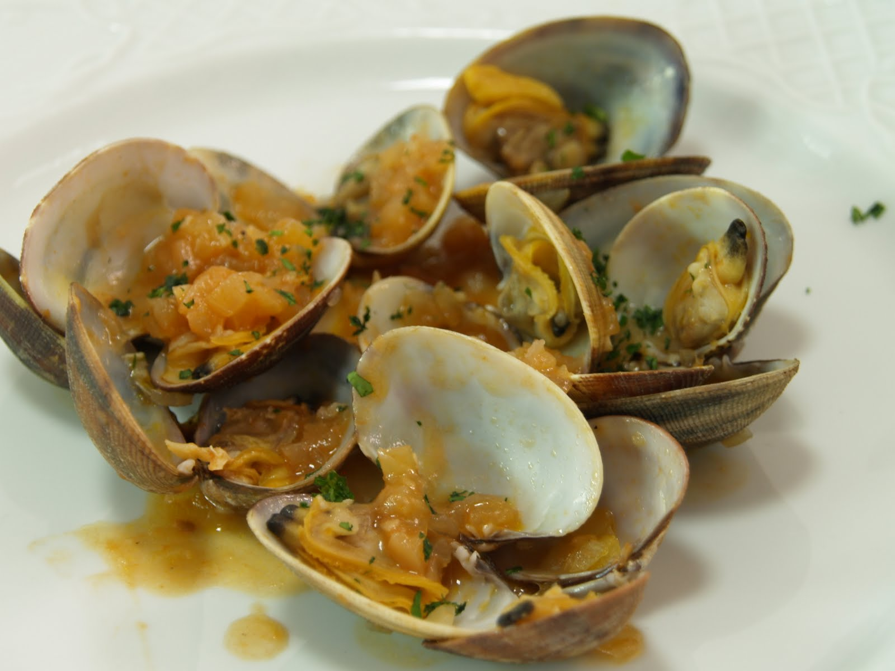

Almejas a la marinera

Las almejas a la marinera son un exquisito plato de bivalvos que destaca por su deliciosa combinación de
sabores. La preparación del plato resalta la frescura y el sabor natural de las almejas, mientras que la
salsa marinera aporta un toque aromático y sabroso que es perfecto para mojar con pan.
Este plato es atractivo tanto por su aspecto apetitoso como por el aroma embriagador que emana de la
combinación de ingredientes frescos y bien sazonados.
Servidas habitualmente en plato hondo o cazuela, se presentan las almejas abiertas, revelando su interior
tierno y jugoso, bañado en la sabrosa salsa.
Preguntamos la receta a
ChatGPT, que nos invita
a servirlas como aperitivo para 4 personas. En caso de servirlo como plato principal, ajustar
cantidades al gusto.
Ingredientes:
- 1 kg de almejas frescas
- 2 dientes de ajo, finamente picados
- 1 cebolla, finamente picada
- 1 pimiento verde, finamente picado
- 1/2 taza de tomate triturado (puede ser enlatado)
- 1/2 taza de vino blanco
- Perejil fresco, picado
- Aceite de oliva virgen extra
- Sal y pimienta al gusto
Sigue las siguientes instrucciones para cocinarlas:
-
Limpia las almejas: Remoja las almejas en agua fría con sal durante aproximadamente 30 minutos para que
eliminen cualquier arena que puedan contener. Luego, enjuágalas varias veces.
-
Sofríe los ingredientes aromáticos: En una sartén grande, calienta un poco de aceite de oliva. Agrega
los ajos, la cebolla y el pimiento verde. Sofríe a fuego medio hasta que estén tiernos.
-
Añade el tomate: Agrega el tomate triturado a la sartén y cocina por unos minutos hasta que la mezcla
esté bien integrada.
-
Vierte el vino: Añade el vino blanco y deja que hierva durante unos minutos para que se evapore el
alcohol.
-
Cocina las almejas: Agrega las almejas a la sartén y revuelve bien para que se mezclen con la salsa.
Cocina hasta que las almejas se abran. Es importante que deseches las que no se abran.
-
Finaliza con perejil: Espolvorea perejil fresco picado sobre las almejas y ajusta el sazón con sal y
pimienta al gusto.
Este plato es ideal para quienes disfrutan de la cocina de mariscos y buscan una experiencia culinaria
sabrosa y reconfortante. Sírvelas en un plato hondo para una mejor presentación visual, y no olvides
acompañarlas con pan para disfrutar aun más de la salsa. ¡Espero que te guste!